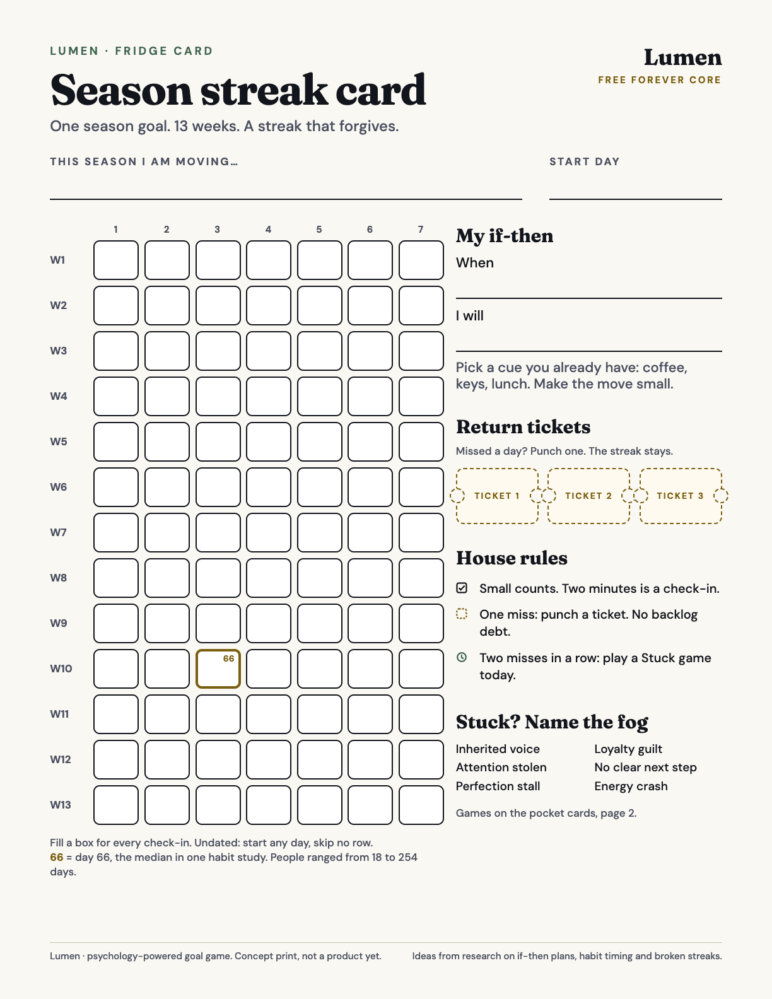
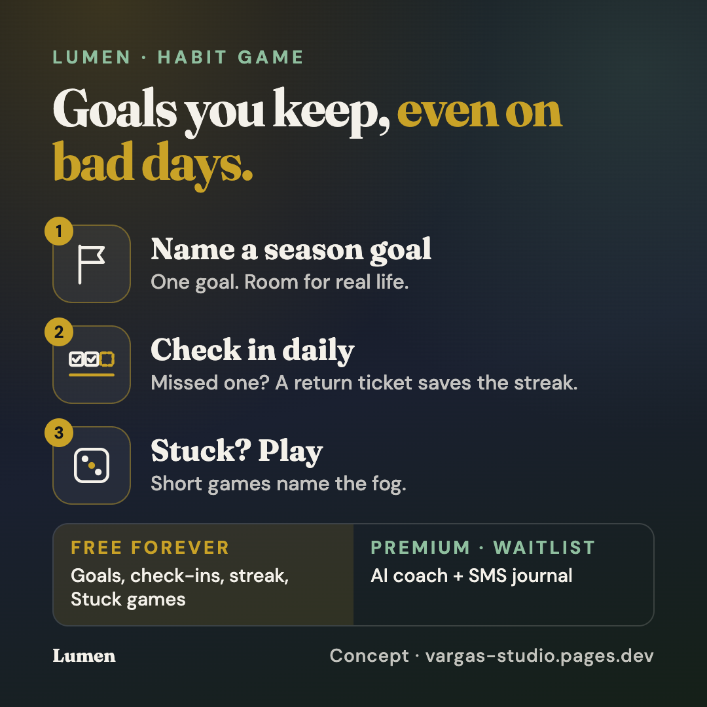

Lumen
Miss a day. You're still in.
A goal game for people who quit after one bad week.
Alexandra Vargas · vargas-studio.pages.dev/projects/lumen/
One missed Tuesday can end a goal that was going fine.
A streak app
0
Lumen
23 · kept
Sample person
Dana is on day 23 of writing one page each morning. Tuesday her kid is sick.
Wednesday the app says 0. She doesn't open it again.
Dana is a sample, not a user. In 7 studies, a broken streak in a log lowered later engagement, less so when people could repair it. Silverman & Barasch, Journal of Consumer Research 49(6), 2023. doi.org/10.1093/jcr/ucac029
Six taps name your fog. A missed day costs one ticket.
"What's in your way lately?" Answer six cards, watch the fog lift, then punch a return ticket for a missed Tuesday.
The left phone is live. Tap it.
Live: What's your fog?
Beat 4: the ticket punch
Front door at /projects/lumen/play.html, built 22 Nov 2026. Right phone uses sample answers.
A season is 13 weeks, three return tickets and one small move a day.
Name one season goal.
Add a cue you already have: "When I pour coffee, I write one line."
Check in each day.
Two minutes counts. Totals only go up.
Miss a day? Punch a ticket.
Three a season. The streak stays. No backlog debt.
Stuck twice? Clear the fog.
Pick what's in the way. Play its 2-minute game.
Rules from the free fridge card: /projects/lumen/print.html. Six fogs: The Echo, The Loyal Heart, The Wanderer, The Dreamer, The Perfectionist, The Low Battery.
Each rule in the game comes from a published study.
| In Lumen | What the study found | Study |
|---|---|---|
| Return tickets | Broken streaks lowered later engagement. Less so when the streak could be repaired. | Silverman & Barasch, J. Consumer Research, 2023 · 7 studies |
| Only three a season | Goals with a few skips that cost something beat rigid goals and loose ones. | Sharif & Shu, J. Marketing Research 54(3), 2017 |
| One miss is fine | Habits took 66 days on average (18 to 254). Missing one chance didn't undo it. | Lally et al., Eur. J. Social Psychology, 2010 · 96 people |
| The if-then cue | "When X, I will Y" plans helped people reach goals, d = .65. | Gollwitzer & Sheeran, Adv. Exp. Social Psych. 38, 2006 · 94 tests |
| Fresh page on Mondays | Gym visits and goal sign-ups rose after new weeks, months and birthdays. | Dai, Milkman & Riis, Management Science 60(10), 2014 |
doi.org/10.1093/jcr/ucac029 · 10.1509/jmr.15.0231 · 10.1002/ejsp.674 · 10.1016/S0065-2601(06)38002-1 · 10.1287/mnsc.2014.1901. The 254 days is the study's projection.
The game stays free. A coach comes later, and its price isn't set.
Free forever
The whole game
Season goal, daily check-ins, three return tickets, six fog games, the printable fridge card.
Premium · waitlist
AI coach + SMS journal
Price: not set.
ASSUMPTION: at $6 a month with 5% paying, a signup is worth about $3.60. Paid ads at $10 to $75 a signup can't cover that, so people have to arrive through shared cards.
Waitlist: /projects/lumen/waitlist.html. The $6, 5% and ad costs are guesses from the paper validation plan, 22 Nov 2026.
Fewer than half of New Year's resolvers are still on track by summer.
A study followed 159 resolvers by phone. At six months, 46% had kept going. The dashed 54% are who Lumen is for.
Habit-tracking apps, 2024: $0.5B to $1.5B, by vendor estimate. The reports disagree threefold. Lumen's slice is not sized yet.
Norcross, Mrykalo & Blagys, J. Clinical Psychology 58(4), 2002, "Auld lang syne". DataHorizzon Research ($512M) and Market Research Future ($1.5B), habit tracking app reports, opened 23 Nov 2026.
Others forgive a miss or turn it into a game. Lumen does both.
The new part: your shared card carries a spare ticket you give a friend. A quick search found no app that does this.
Placement is my read, not data. Duolingo blog (streak freeze); Habitica wiki (dailies, damage); Finch and Streaks App Store listings; Kintsu on Product Hunt. Checked 23 Nov 2026.
Pre-launch. The front door works, and no stranger has played it yet.
| Test | Target | Result |
|---|---|---|
| Fog game, cold read at 375 px | Reveal in under a minute | Done, 22 Nov: 7 taps, ~30 s |
| 5 people who quit a goal play it, unhelped | 4 of 5 reach "Still in" in 90 s | Not run yet |
| Ticket screen vs a "streak 0" screen | 3 of 5 name relief, nobody "guilty" | Not run yet |
| 7-day ads, 3 angles, fog game to season start | 8% start a season | Not run yet |
| Two weeks later: back after a missed day | 30% of starters | Not run yet |
| "Send with a ticket" taps per reveal | 10% after 200 reveals | Not run yet |
Targets are starting guesses from the Lumen validation, emotion and share plans (22 Nov 2026), not benchmarks. Kill line: under 3% start a season.
The card, made in the browser
The first 1,000 arrive on cards that carry a spare ticket.
- Alexandra posts her own card: The Perfectionist, "ugly first draft".
- Seed it in New Year and Monday-reset threads, study-with-me and writing groups.
- A friend's link opens on "A friend sent you a spare ticket."
- Push hardest on the 1st and on Mondays, when people restart anyway.
Loop from the Lumen share plan, 22 Nov 2026. Card shown with sample answers. Restart timing: fresh-start effect, Dai, Milkman & Riis, 2014.
One person has made every piece so far.
Alexandra Vargas
Designs and builds Lumen with Claude. Made the fog game, the fridge card, the social pack and this deck.
Not hiring yet.



All pieces live at vargas-studio.pages.dev/projects/lumen/.
Not raising yet. First, five people play the fog game.
This week
5 people who quit a goal play it on their phones. 5 friends compare the ticket screen with a "streak 0" screen.
Then
A 7-day ad test with 3 angles. Keep going at 8% season starts.
After that
Price the coach. Build Welcome Back, the morning-after screen, in the app.
Miss a day. You're still in.